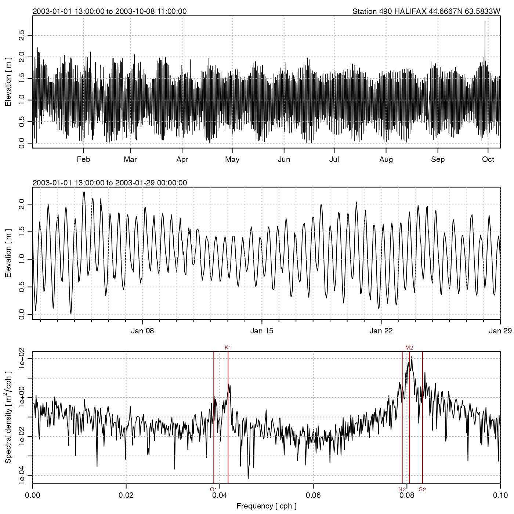

This function is somewhat analogous to subset.data.frame(), but
subsetting is only permitted by time.
# S4 method for sealevel subset(x, subset, ...)
| x | a sealevel object. |
|---|---|
| subset | a condition to be applied to the |
| ... | ignored. |
A new sealevel object.
Other things related to sealevel data:
[[,sealevel-method,
[[<-,sealevel-method,
as.sealevel(),
plot,sealevel-method,
read.sealevel(),
sealevel-class,
sealevelTuktoyaktuk,
sealevel,
summary,sealevel-method
Other functions that subset oce objects:
subset,adp-method,
subset,adv-method,
subset,amsr-method,
subset,argo-method,
subset,cm-method,
subset,coastline-method,
subset,ctd-method,
subset,echosounder-method,
subset,lobo-method,
subset,met-method,
subset,oce-method,
subset,odf-method,
subset,rsk-method,
subset,section-method,
subset,topo-method,
subset,xbt-method
Dan Kelley
